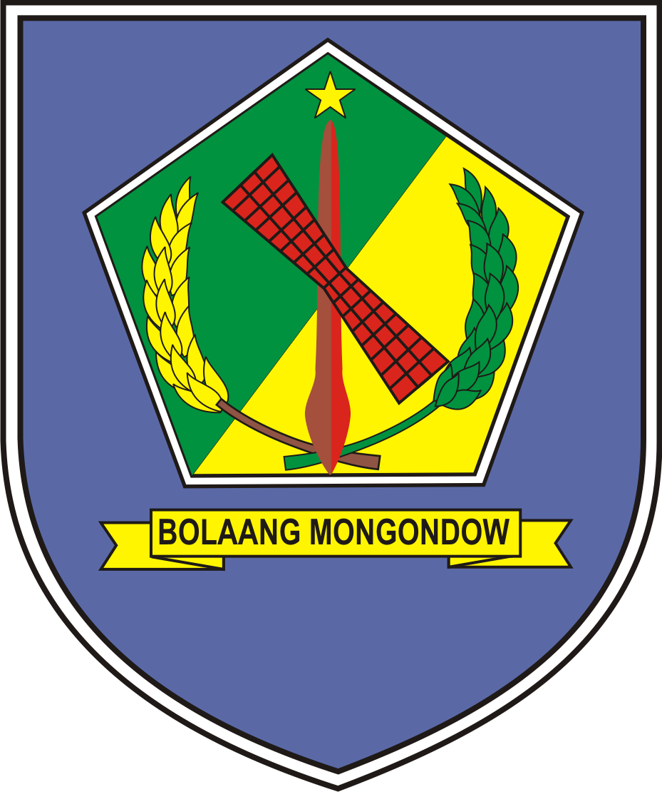

- 
-
Kabupaten Bolaang Mongondow merupakan salah satu daerah otonom dalam wilayah Provinsi Sulawesi Utara yang terbentuk berdasarkan Undang-Undang Republik Indonesia Nomor 29 Tahun 1959 tentang Pembentukan Daerah-Daerah Tingkat II di Sulawesi (Lembaran Negara Republik Indonesia Tahun 1959 Nomor 74, Tambahan Lembaran Negara Republik Indonesia Nomor 1822).
Di tahun 2005 Kabupaten Bolaang Mongondow terbagi dalam beberapa wilayah kecamatan dengan ibukota Kabupaten terletak di Kecamatan Kotamobagu yang juga merupakan pusat pemerintahan, pelayanan kesehatan dan pendidikan.
Proses penyelenggaraan pemerintahan, pelaksanaan pembangunan dan pembinaan kemasyarakatan di Kabupaten Bolaang Mongondow yang berlangsung selama ini, selain telah menghasilkan kemajuan yang cukup signifikan. Semangat otonomi daerah juga telah menciptakan perubahan besar dalam tatanan kepemerintahan serta telah memberikan nuansa baru dalam proses Penyelenggaraan Pemerintahan.
Dilihat dari sejarah Kabupaten Bolaang Mongondow, maka berdasarkan data Pemerintah kabupaten Bolaang Mongondow disebutkan bahwa Penduduk asli Bolaang Mongondow berasal dari keturunan Gumalangit dan Tendeduata serta Tumotoibokol dan Tumotoibokat, awalnya mereka tinggal di gunung Komasaan (Bintauna).
Kemudian menyebar ke timur di tudu in Lombagin, Buntalo, Pondoli’, Ginolantungan sampai ke pedalaman tudu in Passi, tudu in Lolayan, tudu in Sia’, tudu in Bumbungon, Mahag, Siniow dan lain-lain. Peristiwa perpindahan ini terjadi sekitar abad 8 dan 9. Nama Bolaang berasal dari kata “bolango” atau “balangon” yang berarti laut. Bolaang atau golaang dapat pula berarti menjadi terang atau terbuka dan tidak gelap, sedangkan Mongondow dari kata ‘momondow’ yang berarti berseru tanda kemenangan.
Bolaang terletak di tepi pantai utara yang pada abad 17 sampai akhir abad 19 menjadi tempat kedudukan istana raja, sedangkan Mongondow terletak sekitar Kotamobagu. Daerah pedalaman sering disebut dengan ‘rata Mongondow’. Dengan bersatunya seluruh kelompok masyarakat yang tersebar, baik yang yang berdiam di pesisir pantai maupun yang berada di pedalaman Mongondow di bawah pemerintahan Raja Tadohe, maka daerah ini dinamakan Bolaang Mongondow.
Setiap kelompok keluarga dari satu keturunan dipimpin oleh seorang Bogani (laki-laki atau perempuan) yang dipilih dari anggota kelompok dengan persyaratan : memiliki kemampuan fisik (kuat), berani, bijaksana, cerdas, serta mempunyai tanggung jawab terhadap kesejahteraan kelompok dan keselamatan dari gangguan musuh. Mokodoludut adalah punu’ Molantud yang diangkat berdasarkan kesepakatan seluruh bogani. Mokodoludut tercatat sebagai raja (datu yang pertama). Sejak Tompunu’on pertama sampai ketujuh, keadaan masyarakat semakin maju dengan adanya pengaruh luar (bangsa asing).
Perubahan total mulai terlihat sejak Tadohe menjadi Tompunu’on, akibat pengaruh pedagang Belanda dirubah istilah Tompunu’on menjadi Datu (Raja). Tadohe dikenal seorang Datu yang cakap, system bercocok tanam diatur dengan mulai dikenalnya padi, jagung dan kelapa yang dibawa bangsa Spanyol pada masa pemerintahan Mokoagow (ayah Tadohe).
Tadohe melakukan penggolongan dalam masyarakat, yaitu pemerintahan (Kinalang) dan rakyat (Paloko’). Paloko’ harus patuh dan menunjang tugas Kinalang, sedangkan Kinalang mengangkat tingkat penghidupan Paloko’ melalui pembangunan disegala bidang, sedangkan kepala desa dipilih oleh rakyat.Tadohe berhasil mempersatukan seluruh rakyat yang hidup berkelompok dengan boganinya masing-masing, dan dibentuk sistem pemerintahan baru. Seluruh kelompok keluarga dari Bolaang Mongondow (Passi dan Lolayan), Kotabunan, Dumoga, disatukan menjadi Bolaang Mongondow.
Di masa ini mulai dikenal mata uang real, doit, sebagai alat perdagangan. Pada zaman pemerintahan raja Cornelius Manoppo, raja ke-16 (1832), agama Islam masuk daerah Bolaang Mongondow melalui Gorontalo yang dibawa oleh Syarif Aloewi yang kawin dengan putri raja tahun 1866. Karena keluarga raja memeluk agama Islam, maka agama itu dianggap sebagai agama raja, sehingga sebagian besar penduduk memeluk agama Islam dan turut mempengaruhi perkembangan kebudayaan dalam beberapa segi kehidupan masyarakat. Sekitar tahun 1867 seluruh penduduk Bolaang Mongondow sudah menjadi satu dalam bahasa, adat dan kebiasaan yang sama (menurut N. P Wilken dan J. A. Schwarz).
Pada tanggal 1 Januari 1901, Belanda dibawa pimpinann Controleur Anton Cornelius Veenhuizen bersama pasukannya secara paksa bahkan kekerasan berusaha masuk Bolaang Mongondow melalui Minahasa, setelah usaha mereka melalui laut tidak berhasil dan ini terjadi pada masa pemerintahan Raja Riedel Manuel Manoppo dengan kedudukan istana raja di desa Bolaang. Raja Riedel Manuel Manoppo tidak mau menerima campur tangan pemerintahan oleh Belanda, maka Belanda melantik Datu Cornelis Manoppo menjadi raja dan mendirikan komalig (istana raja) di Kotobangon pada tahun 1901. Pada tahun 1904, dilakukan perhitungan penduduk Bolaang Mongondow dan berjumlah 41.417 jiwa.
Pada tahun 1906, melalui kerja sama dan kesepakatan dengan raja Bolaang Mongondow, W. Dunnebier mengusahakan pembukaan Sekolah Rakyat dengan tiga kelas yang dikelola oleh zending di beberapa desa, yakni : desa Nanasi, Nonapan, Mariri Lama, Kotobangon, Moyag, Pontodon, Passi, Popo Mongondow, Otam, Motoboi Besar, Kopandakan, Poyowa Kecil dan Pobundayan dengan total murid sebanyak 1.605 orang, sedangkan pengajarnya didatangkan dari Minahasa. Pada tahun 1937 dibuka di Kotamobagu sebuah sekolah Gubernemen, yaitu Vervolg School (sekolah sambungan) kelas 4 dan 5 yang menampung lepasan sekolah rakyat 3 tahun.